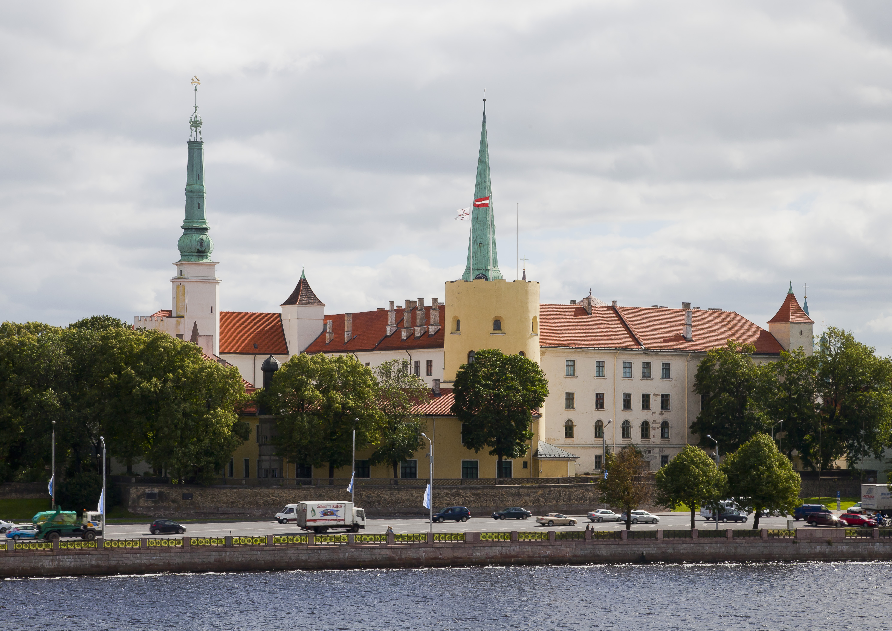

Nav skaidrs, ar kuru pakalpojumu sākt.
Ja situācija vēl nav pietiekami skaidra, konsultācija palīdz saprast, vai vajadzīga apsekošana, dokumentu analīze vai cita pārbaude.
Sākotnējais tehniskais virziens
Praktiska palīdzība situācijās, kad nepieciešams saprast jumta, hidroizolācijas, fasādes, būvdarbu vai projekta jautājumu un izvēlēties pamatotu nākamo soli.

PIRMAIS TEHNISKAIS SOLIS
Ja situācija vēl nav pietiekami skaidra, konsultācija palīdz saprast, vai vajadzīga apsekošana, dokumentu analīze vai cita pārbaude.
Tehnisks skaidrojums palīdz izvērtēt riskus, pirms tiek izvēlēts remonta vai pārbūves virziens.
Konsultācijā var pārrunāt redzamos bojājumus, mitruma pazīmes, mezglus, pieslēgumus un iespējamos nākamos soļus.
Pirms sarunas palīdz skaidrāk noformulēt jautājumus, riskus un informāciju, kas jāprecizē.
Sākotnēja informācijas izvērtēšana palīdz saprast, kāds jautājums jārisina un vai nepieciešama padziļināta pārbaude.
Sarunas jautājumi
Konsultācija tiek pielāgota jautājumam, pieejamajiem fotoattēliem, dokumentiem un tam, kādu lēmumu nepieciešams pieņemt.
Var pārrunāt noplūdes, mitruma pazīmes, redzamus bojājumus, riska vietas un iespējamos nākamos pārbaudes vai remonta soļus.
Konsultācijā var apspriest fasāžu, pieslēgumu, malu zonu vai citu ēkas norobežojošo konstrukciju tehniskos jautājumus.
Var izvērtēt, kāda informācija nepieciešama, lai saprastu būvdarbu kvalitātes riskus vai sagatavotos neatkarīgai pārbaudei.
Ja pieejami projekta materiāli, var pārrunāt neskaidrus mezglus, risinājumu praktisko izpildāmību un jautājumus, kas jāprecizē.
Fotoattēli un īss situācijas apraksts palīdz saprast, vai pietiek ar konsultāciju vai nepieciešama apsekošana objektā.
Konsultācijas mērķis ir palīdzēt saprast, ko darīt tālāk - precizēt dokumentus, plānot apsekošanu, sagatavot remontu vai pārrunāt situāciju ar iesaistītajām pusēm.
Rezultāts
Tehniskās konsultācijas mērķis ir palīdzēt saprast situāciju, riskus un piemērotāko nākamo soli, pirms tiek pieņemts lēmums par remontu, apsekošanu, dokumentu analīzi vai turpmāku pārbaudi.
Saprotamāks skatījums uz to, kas jāprecizē, kādi riski var būt būtiski un kāda informācija vēl nepieciešama.
Ieteikums, vai piemērotāka ir konsultācija, apsekošana, hidroizolācijas pārbaude, būvuzraudzība vai projektu analīze.
Tehniski pamatots virziens sarunai ar īpašnieku, apsaimniekotāju, būvnieku, projektētāju vai citu iesaistīto pusi.
Īss apraksts, fotoattēli, dokumenti un vēlamais laiks palīdz sākotnējo sarunu sasaistīt ar kontaktformu, failu augšupielādi un kalendāra pieprasījumu.
Īss situācijas apraksts
Fotoattēli no bojājuma vietas vai objekta
Pieejamie rasējumi, PDF vai dokumenti
Jautājums, kuru vēlaties noskaidrot
Objekta adrese un vēlamais konsultācijas laiks
Norādiet, kas noticis, kāda situācija jāizvērtē un kādu lēmumu nepieciešams pieņemt.
Fotoattēli, rasējumi, PDF un īss apraksts palīdz precizēt sarunas saturu.
Norādiet ērtāko laiku sākotnējai sarunai vai tālākas apsekošanas saskaņošanai.
Pēc informācijas izvērtēšanas tiek ieteikta piemērotākā konsultācijas, apsekošanas vai pārbaudes forma.
Aprakstiet situāciju, pievienojiet pieejamos fotoattēlus vai dokumentus un izvēlieties vēlamo konsultācijas laiku. Jumtu ekspertīžu birojs pārbaudīs informāciju un sazināsies par nākamo soli.